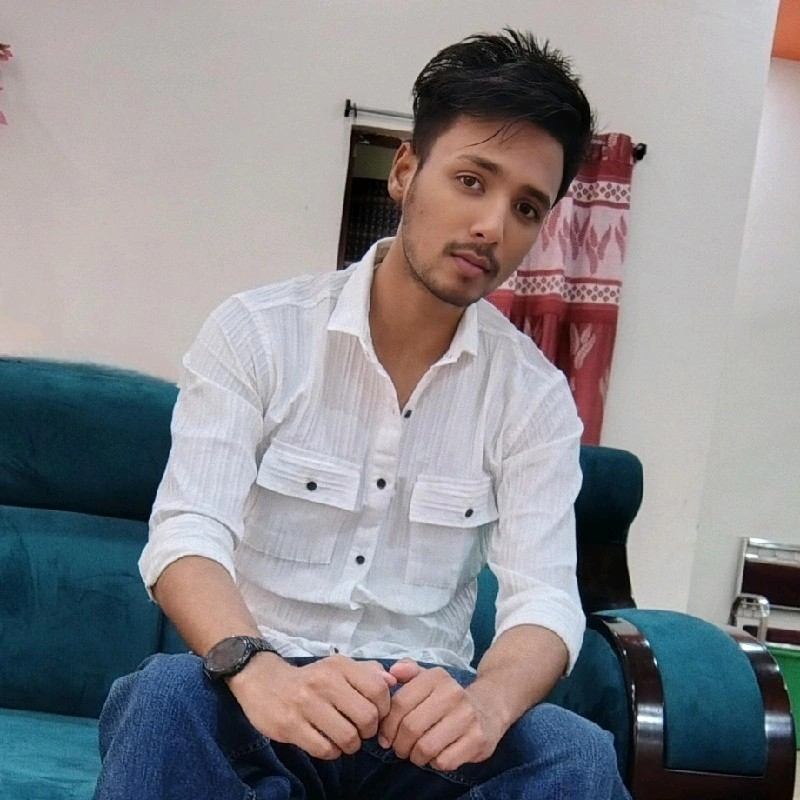

|
 |
I am a passionate and dedicated Computer Science Engineering student with a strong interest in programming, web development, and emerging technologies. I have hands-on experience in HTML, CSS, and JavaScript, and I enjoy building responsive and creative web projects. Along with my academics, I run a tech-based YouTube channel called “The Byte Buster”, where I create content on programming, technology, and cybersecurity. I am also a founding member of Tarang, a creative initiative where I explore innovation and teamwork. Additionally, I have participated in NCC activities, which have strengthened my discipline, leadership, and teamwork skills. I'm currently improving my programming skills in C while exploring cybersecurity and data structures, and I'm eager to contribute to projects that combine creativity and technology to make a meaningful impact. |